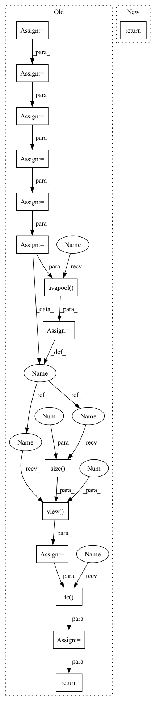

Pattern ID :34720
Before Change
return nn.Sequential(*layers)
def forward(self, x, feature=False):
x = self.conv1(x)
x = self.bn1(x)
x = self.relu(x)
x = self.layer1(x)
x = self.layer2(x)
x = self.layer3(x)
x = self.layer4(x)
x = self.avgpool( x)
x = x.view(x.size(0 ) , -1 )
if feature:
return x
x = self .fc( x)
return x
def resnet10(**kwargs):After Change
return x
def forward(self, x: Tensor) -> Tensor:
return self._forward_impl(x)
def _resnet(In pattern: SUPERPATTERN
Frequency: 3
Non-data size: 15
Instances Fragment ID: 99624816
Project Name: mboudiaf/pytorch-meta-dataset
Commit Name: bb07842c7b737a6c396585a665941f184b69f543
Time: 2022-02-19
Author: mboudiaf@Maliks-MacBook-Pro.local
File Name: src/models/standard/resnet.py
M Class Name: ResNet
N Class Name: ResNet
M Method Name: forward(2)
N Method Name: forward(3)
M Parent Class: nn.Module
N Parent Class: nn.Module
M File Name: src/models/standard/resnet.py
N File Name: src/models/standard/resnet.py
M Start Line: 135
M End Line: 150
N Start Line: 245
N End Line: 246
Before Change
def forward(self, x: torch.Tensor) -> torch.Tensor:
Forward.
x = self.conv1(x)
x = self.trans1(self.dense1(x))
x = self.trans2(self.dense2(x))
x = self.dense3(x)
x = self.bn(x)
x = self.relu(x)
x = self.avgpool( x)
x = x.view(x.size(0 ) , -1 )
x = self.fc( x)
return x
def get_model(**kwargs: bool) -> nn.Module:After Change
def forward(self, x: torch.Tensor) -> torch.Tensor:
Forward.
return self._forward_impl(x)
def get_model(**kwargs: bool) -> nn.Module: Fragment ID: 99624656
Project Name: j-marple-dev/model_compression
Commit Name: 00276493c8fc6c1c66e4500b9a4ad26526384feb
Time: 2020-07-11
Author: jwpark@jmarple.ai
File Name: src/models/densenet.py
M Class Name: DenseNet
N Class Name: DenseNet
M Method Name: forward(2)
N Method Name: forward(2)
M Parent Class: nn.Module
N Parent Class: nn.Module
M File Name: src/models/densenet.py
N File Name: src/models/densenet.py
M Start Line: 163
M End Line: 175
N Start Line: 189
N End Line: 189
Before Change
return nn.Sequential(*layers)
def forward(self, x, feature=False):
x = self.conv1(x)
x = self.bn1(x)
x = self.relu(x)
x = self.layer1(x)
x = self.layer2(x)
x = self.layer3(x)
x = self.layer4(x)
x = self.avgpool( x)
x = x.view(x.size(0 ) , -1 )
if feature:
return x
x = self.fc( x)
return x
def resnet10(**kwargs):After Change
return x
def forward(self, x: Tensor) -> Tensor:
return self._forward_impl(x)
def _resnet( Fragment ID: 99624817
Project Name: mboudiaf/pytorch-meta-dataset
Commit Name: bb07842c7b737a6c396585a665941f184b69f543
Time: 2022-02-19
Author: mboudiaf@Maliks-MacBook-Pro.local
File Name: src/models/standard/resnet.py
M Class Name: ResNet
N Class Name: ResNet
M Method Name: forward(2)
N Method Name: forward(3)
M Parent Class: nn.Module
N Parent Class: nn.Module
M File Name: src/models/standard/resnet.py
N File Name: src/models/standard/resnet.py
M Start Line: 135
M End Line: 150
N Start Line: 245
N End Line: 246
Before Change
return nn.Sequential(*layers)
def forward(self, x):
out = F.relu(self.bn1(self.conv1(x)))
out = self.maxpool(out)
out = self.layer1(out)
out = self.layer2(out)
out = self.layer3(out)
out = self.layer4(out)
out = self.avgpool( out)
out = out.view(out.size(0 ) , -1 )
out = self.fc( out)
return out
def resnet(cfg, sketch_rate=None, start_conv=1, num_classes=1000):
if cfg == "resnet18":After Change
return x
def forward(self, x):
return self._forward_impl(x)
def resnet(cfg, layer_cfg=None, num_classes=1000):
if cfg == "resnet18": Fragment ID: 99624678
Project Name: lmbxmu/epruner
Commit Name: 6250a88e8504c685486d149f1c99ec05235666e1
Time: 2020-02-12
Author: 864589477@qq.com
File Name: model/resnet_imagenet.py
M Class Name: ResNet
N Class Name: ResNet
M Method Name: forward(2)
N Method Name: forward(2)
M Parent Class: nn.Module
N Parent Class: nn.Module
M File Name: model/resnet_imagenet.py
N File Name: model/resnet_imagenet.py
M Start Line: 94
M End Line: 103
N Start Line: 211
N End Line: 211